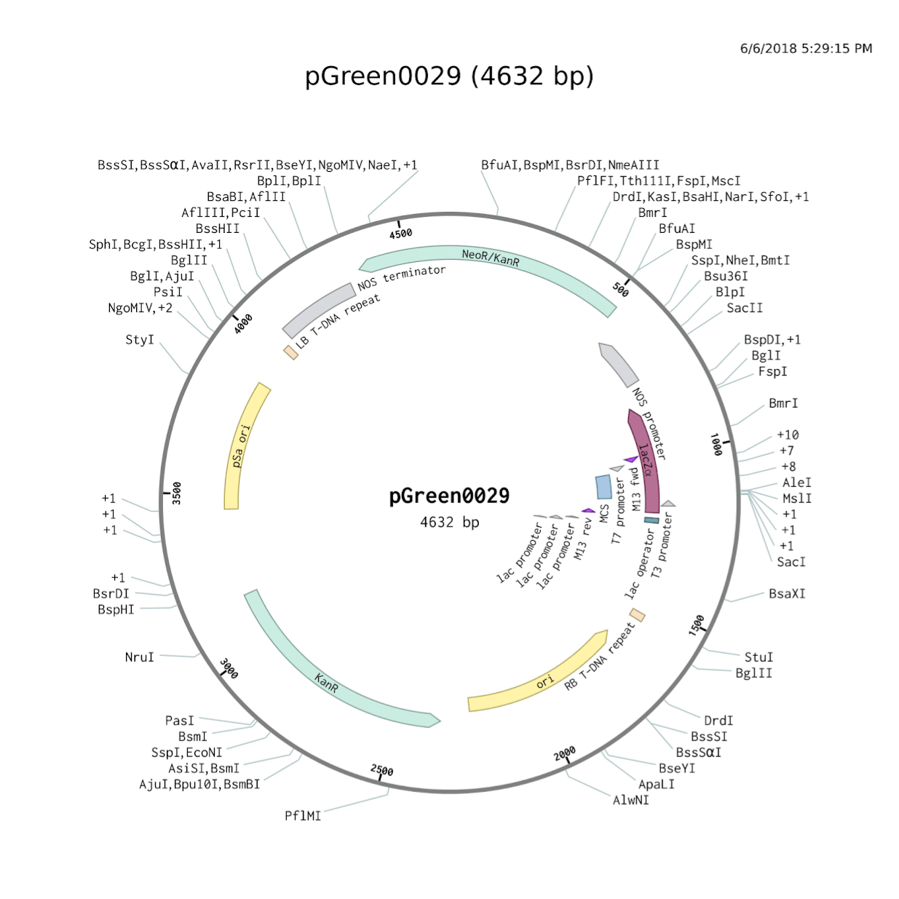
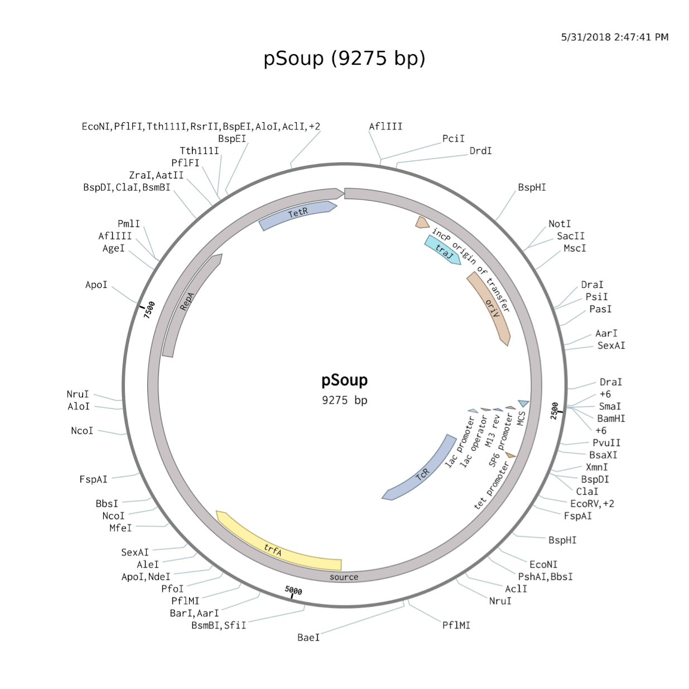

Transformation is the process by which genetic code, or DNA, from one organism is transferred to another. Through transformation, we can make rice express genes, or transcripts of DNA, and produce proteins, bodily molecules designated for purposes. This transfer of DNA can be accomplished in several ways.
Agrobacterium Tumefaciens, in its natural form, infects plant cells, transferring part of its genetic code in the process. A lab-ready, commercially available version of this bacteria can be equipped with a Ti plasmid, a circular section of DNA, which it will transfer to rice cells. We can gain the sequences of DNA we want to transfer to the rice cells via two processes.
First, using restriction enzymes, or “genetic scissors,” we “cut” the genome of our sources of DNA. These sources include soybeans and Pseudomonas Aeruginosa. We cut these genomes at certain sites so that the genes we want to include in our insert have been cut free from the DNA of the soybeans and the bacteria. Then, through a process called Polymerase Chain Reaction, or PCR, we replicate the sequences we desire until we have a sufficient amount. This process involves a "cut and paste" technique. These replicated sequences can be inserted into the Ti plasmid when we “cut” the Ti plasmid with the same restriction enzymes used previously, making an opening where we can place our new sequence and then “paste” it in with an enzyme called DNA ligase.
To get the rice cells into the specific conditions where we can most easily produce the transformed rice cells, we must make them into protoplasts, or plant cells that lack cell walls. This is achieved by first exposing the cells to a particular solution of pectinase and cellulase (which digest the cell wall), then filtering the cells through cheesecloth and sterilizing them, and finally centrifuging the product to isolate the cells.
Leghemoglobin, an iron-containing oxygen binding compound found in the soybean, Glycine Max, is easily processed by the body to produce hemoglobin, an essential oxygen-binding compound found in red blood cells essential for oxygen transport in the bloodstream; leghemoglobin is used in soybeans to prevent oxygen from interfering with enzymes and pathways required to “fix” nitrogen in the root nodules, where symbiotic bacteria cooperate with plant cells. B12, however, is a coenzyme, or a compound that assists with bodily chemical reactions. An essential amino acid, methionine, is synthesized by the MetH enzyme. This enzyme requires the presence of B12 for proper function, and without B12, this enzyme cannot function. B12 is produced naturally by Pseudomonas Aeruginosa in an aerobic manner.
Among the methods considered for the transformation of rice were transformation by Agrobacterium, electroporation, and microprojectile bombardment. Unfortunately, Agrobacterium does not readily interact with rice, creating an obstacle to its use in this scenario. The electroporation process is less widely used than the Agrobacterium process for plant transformation. Microprojectile bombardment, although effective, offers little control over the location, or locus, where the genes would be inserted. Therefore, it was most logical to proceed with the Agrobacterium Tumefaciens transformation and to follow the best practices to increase the effectiveness of the method.
Agrobacterium infects its hosts by introduction of a Ti plasmid, or section of circular DNA, into the chromosomal DNA of host cells. Ti plasmids will first be isolated from Agrobacterium. Afterwards, restriction enzymes cut the plasmid DNA at certain loci. After adding DNA with the same sticky ends produced by cutting other DNA with the same restriction enzymes, and “gluing” these fragments with DNA ligase, recombinant plasmids (plasmids with foreign DNA) are produced. The plasmids can then be reintroduced to the Agrobacterium, and these bacteria can be introduced into a medium with rice cell protoplasts in order to transfer the recombinant plasmids to the plant cells.
Organizations such as Greenpeace and the Non GMO Project have expressed significant concerns about the production and cultivation of GMOs like RedRice. They posit that the modifications found in GMOs have the potential to spread to native, non-modified species in a phenomenon termed transgene escape. Such gene transfer is prevented in RedRice by the addition of two more genes to our genetic modification: orf79, which causes male sterility, and Rf-1, which reverses this effect, allowing the species to reproduce while still preventing gene transfer to wild specimens. RedRice, therefore, has little potential to cause environmental damages.
The mechanisms by which the orf79 transcript can be transmitted to their proper mitochondrial location are slightly more complex yet achievable with the same Agrobacterium-mediated transformation; for example, the orf79 transcript must be expressed via a different promoter. The Cauliflower Mosaic Virus CaMV 35S promoter was selected for this purpose (Eckardt, N. A.). For orf79 to achieve its intended effect in the mitochondrion, it must be combined with the proper part of the Rf1-b 5’ sequence for the mitochondrial transit peptide to form a fusion gene; this fusion gene must then be combined with the nos terminator to terminate transcription. For the RF1-b gene, the CaMV 35S promoter and the nos terminator will also be used. The 5’ sequence of Rf1-b necessary for mitochondrial localisation was analyzed by MITOPROT and was appended to orf79 to form the fusion gene (“MITOPROT”).
The Cytoplasmic Male Sterility caused by orf79 and the restoration of fertility by Rf-1 are of unique function. This system, called the CMS-BT or Boro II system, works because the orf79 encodes a cytotoxic peptide while the Rf-1 gene encodes a pentatricopeptide repeat protein that uses endonucleolytic cleavage or degradation of mRNA to neutralize the effects of orf79 (Eckardt, N. A.). A nonfunctional recessive version of the fertility restorer gene, called rf-1, differs from the Rf-1 gene by about 10 bp. However, it must be noted that the orf79 transcript, when introduced to the plant cell via Agrobacterium, fails to be expressed in the pollen of plants that have fertility restored (Eckardt, N. A.). The reasons for the inability of orf79 to be inherited via pollen remain dubious. Although this does reduce the effect of the CMS-BT system, it is inevitable.
For the CMS/RF system to work properly, three lines of modified plants must be created and hybrid plants must then be produced. The A (Cytoplasmically sterile) line is modified to contain the orf79 transcript and two recessive (nonfunctional) fertility restorer genes. The B (maintainer) line is modified to contain a recessive fertility restorer gene but no orf79 transcript (Virmani, Sant S). The R (restorer) line is modified to contain a dominant fertility restorer gene and an orf79 transcript (Virmani, Sant S). The A and B lines will be mated to produce a male sterile plant with two recessive nuclear genes for the fertility restorer gene and then the resulting plant (A line) will be mated with a plant from the R line to produce a fertile hybrid heterozygous for the fertility restoration trait (Virmani, Sant S). However, it must be noted that when rice cells are transformed, hemizygous plants, or those with only one transgene, are produced. In order to develop an A line homozygous for recessive fertility restoration genes and affected by cytoplasmic male sterility, a plant transformed with no orf79 and a recessive rf gene and a plant transformed with orf79 as well as a recessive rf gene can be mated (Virmani, Sant S). To produce a plant homozygous for fertility restoration that also has cytoplasmic male infertility, a plant must be transformed with both orf79 as well as an Rf gene and allowed to self-pollinate to produce a line of plants homozygous for the gene (Virmani, Sant S). That will produce a self-pollinating R line.
The Lb gene family is a group of closely related leghemoglobin genes. The LBA, LBC1, LBC2, and LBC3 genes in particular are functional and responsible for leghemoglobin production (“Soybean leghemoglobin gene family: normal, pseudo, and truncated genes.”). LBC3 transformation and later production of leghemoglobin in other species has proven successful (“Expression of a complete soybean leghemoglobin gene in root nodules of transgenic Lotus corniculatus.”). The production of Vitamin B12 in rice can be achieved through similar transformation methods with the GltX, RibF, MsuE, HemA, Hem L, HemB, HemC, HemD, CysG, CobA, nirE, CobI, CobJ, CobM, CobH, CobB, CobN, CobU, CobO, CobQ, CobD, and CobP genes.
Many Ti plasmids function via a binary vector system, which allows two plasmids to be used in the transformation process. One plasmid will store several of the sequences necessary for transformation, and the other will store other necessary frequencies as well as the DNA segments to be transferred to the infected plant cells. PGreen0029 and pSoup form one such binary vector system that is both efficient and popular. Common issues with vector systems include failures to insert sequences into plasmids, failure of bacteria to take up these sequences, and failures of the Agrobacterium to transform plant cells. PGreen0029 facilitates verification that sequences were inserted by means of blue-white selection; restriction enzymes cut at a Multiple Cloning Site in the middle of a lac gene responsible for the processing of lactose. If the sequence was inserted before ligation, the lac gene becomes unusable; if not, the lac gene continues to function. When cultured on a plate filled with kanamycin, an antibiotic, and X-gal, which forms a blue product when processed by bacteria with functional lac genes, E. coli (DH5 alpha strain) that did not pick up a pGreen0029 plasmid (which has a kanamycin resistance gene) will die, while E. coli that picked up a pGreen0029 plasmid will survive.
Those that survive will form white or blue colonies if they picked up a plasmid that did or did not integrate a new segment of the desired DNA after the restriction cut. This process permits verification that sequences were inserted into DH5α. DH5 alpha can then replicate pGreen0029 (pGreen0029 is a high copy plasmid) and then a miniprep process can be used to extract the plasmids from the bacteria. These plasmids, when introduced to Agrobacterium along with pSoup, can then be used for transformation. When rice protoplasts are transformed and the plants regenerate, a selectable marker (antibiotic resistance) that was conferred to the plant via pGreen0029 and pSoup (kanamycin) will distinguish transformed plants from most other plants since they should not survive the antibiotic. Sometimes, during the infection process, T-DNA towards the RB becomes significantly eroded. PGreen0029 combats this effect with 405bp of the lac gene and other sequences that put distance between the MCS and the RB. Gibberellins, a class of plant hormone, can be used to speed up plant growth for laboratory purposes and allow verification that leghemoglobin and b12 are produced. PSoup can be purchased within the popular Agrobacterium strain GV3101 for simplicity. GV3101 has chromosomal rifampin resistance, but this will not impede any selective processes since kanamycin, not rifampin, is used as a selectable marker.
A nos terminator sequence is often necessary to cause the rice cells’ translation machinery to cease “reading” the DNA transcript. In order to ensure that the gene is properly transcribed, a decision was made to replace the terminator sequence common to the lba gene with the nos terminator from Agrobacterium Tumefaciens. Used in the Golden Rice Project and many others as a sequence for the termination of transgene transcripts, it has proven its merit.
However, since longer insert sequences reduce the copy number of the plasmid, it is imperative that the length of our insert is as small as possible while maintaining effectiveness. Wu, et al. studied the effects of reducing promoter length of Glu B-1 on the activity in seed endosperm. It was determined that the GCN4 motif was most necessary for the expression in endosperm, while the ACAA motif and preceding sequences were only partially impactful on endosperm-specific expression. It was decided that a 2,292 bp promoter would unnecessarily impede the copy number of the pGreen0029 plasmid once the insert was introduced and instead a 245 bp segment of the promoter would be used, containing the GCN4 motif as well as two ACAA motifs.
It was noted that the repetition of several promoter or terminator sequences could lead to the instability or recombination of T-DNA. In order to prevent this result, it was decided that the promoter sequences used must be of differing sequences. However, therein lied another risk; if the sequences of the promoters used to regulate B12 pathway were not similar enough, the enzymes used to catalyze the aerobic production of b12 would not be produced in the same conditions. A compromise was reached by the introduction of several different promoters in the Glu gene family, including Glu B-4, B-5, and Glu C. These promoter sequences are quite active and endosperm specific, while other genes in the Glu A and Glu B families are expressed at different times in differing parts of endosperm. These sequences are similarly reduced in size so as to reduce insert size. In order to preserve the activity of the promoter, the B-4, B-5, and C promoters are shortened to 500bp and 600bp respectively. The nos terminator will still, however, be used for all genes.
Several genes related to the production of leghemoglobin in soybeans and other genes related to the production of Vitamin B12 were located. However, since the expression of these genes involves the transferring of sequences, usually expressed in prokaryotes to plants, several steps must be taken to ensure that the sequences are effective in their new location within the modified rice genome. These genes must be equipped with the necessary regulatory sequences to ensure that they can properly interact with eukaryotic gene regulation mechanisms, including necessary polymerase recognition sequences on both the 5’ and 3’ ends. Southern hybridization can then confirm that the sequences were accurately inserted. These sequences can become effective if they are inserted into the rice genome with the proper promoter sequences so the sequences are expressed in the rice endosperm for human consumption. The Glu promoter is a promoter specific to the endosperm of rice, which will allow the Vitamin B12 and leghemoglobin production to be present in consumed rice. Endosperm is the content of seeds which provides for the development of the seeds once they are planted in fertile soil, and constitutes the majority of the rice grain.
These genes will produce adenosylcobalamin, a particular active form of Vitamin B12. Adenosylcobalamin need only bind to an intrinsic factor to become absorbed through ileal receptors and into the bloodstream. Adenosylcobalamin can also be converted by the body into another active form, methylcobalamin, for increased effectiveness.